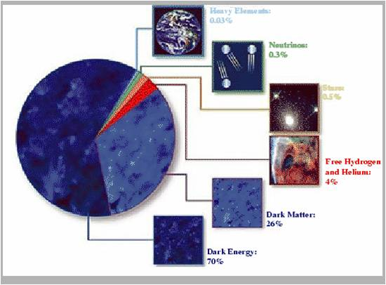
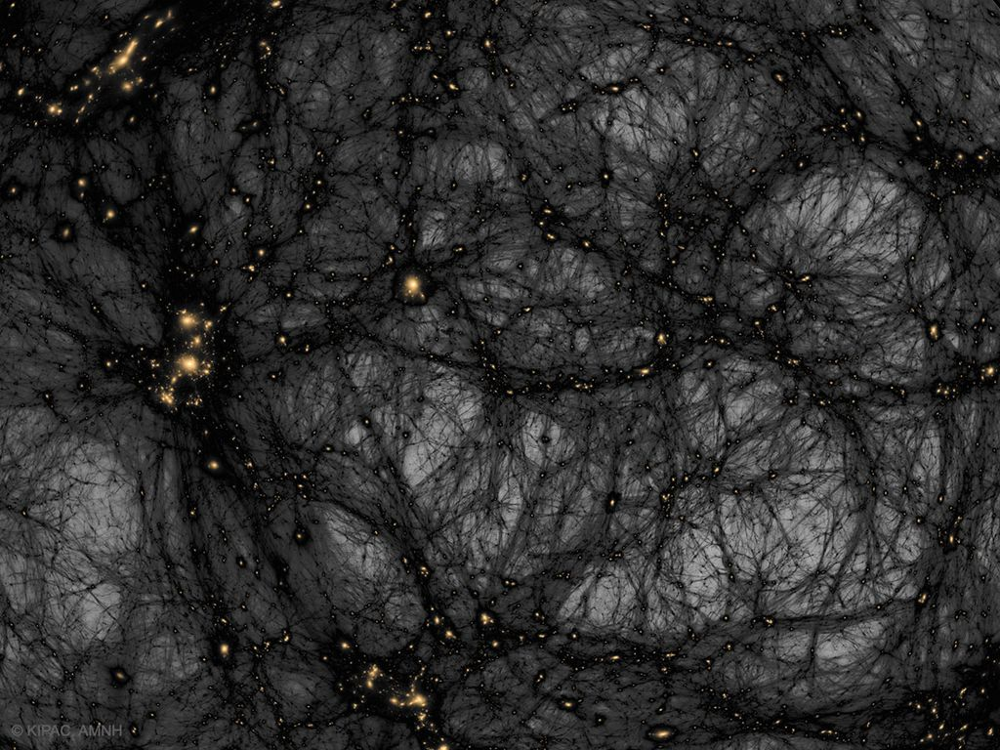
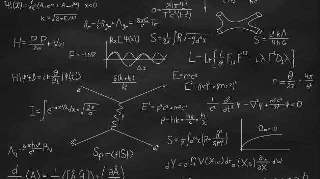
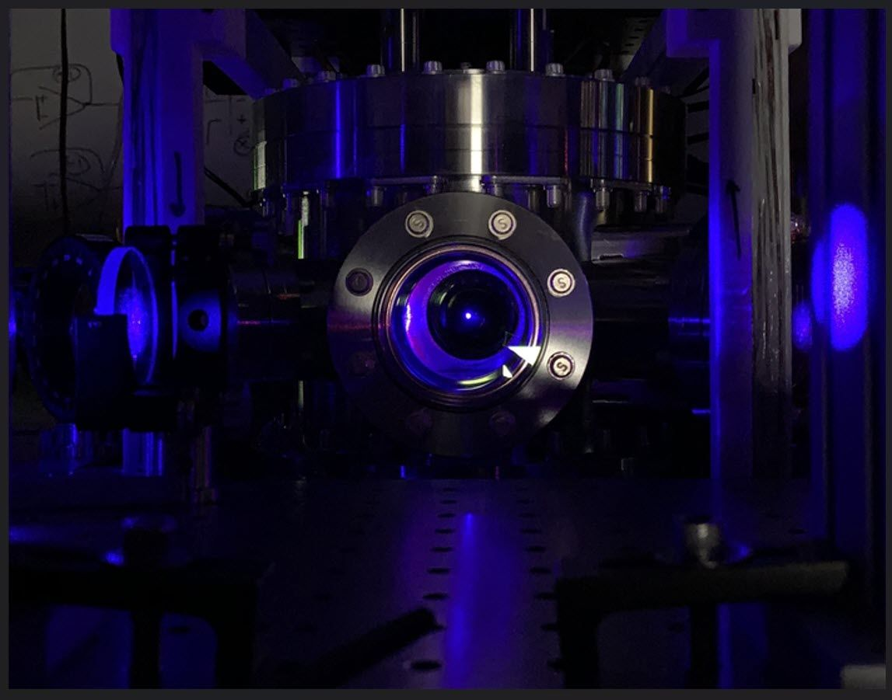
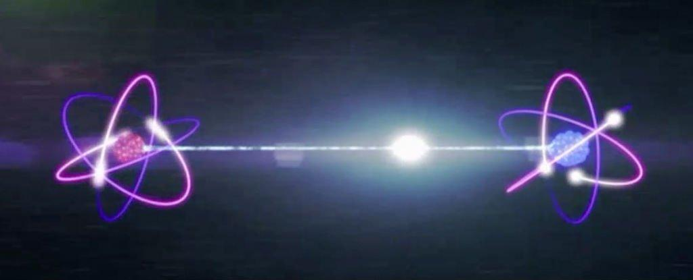

Um buraco negro é um fenômeno espacial de proporções elevadíssimas (geralmente maiores que o sol) e com a massa extremamente compacta, resultando em um campo gravitacional tão forte que nenhum tipo de partícula ou radiação consegue sair. Considerando que até mesmo a luz é sugada, a presença de um buraco negro é constatada pelas consequências gravitacionais observáveis em seus arredores, especialmente pelas mudanças de órbitas de corpos celestes próximos, que passam a ser atraídos para o buraco negro. Além disso, astrônomos e cientistas afirmam que um buraco negro consegue ser observável por decorrência da sua emissão de luz. Primeira imagem de um buraco negro A primeira imagem de um buraco negro foi divulgada em abril de 2019, em uma conferência em Bruxelas. Foi encontrado, após 2 anos de observação e pesquisa, pelo projeto internacional denominado Event Horizon Telescope (EHT), que reúne quase uma dúzia de radiotelescópios no mundo, da Europa ao Polo Sul. Na imagem, a única parte visível do buraco negro é o círculo dourado, chamado pelos astrônomos de "event horizon" (horizonte de evento em português) ou "ponto de não-retorno." Já no centro do horizonte de eventos, se localiza uma densidade de massa incalculável, chamada singularidade. A gravidade desse ponto é tão forte, que nenhum objeto ao redor consegue escapar. Em teoria, somente algo que se movesse em uma velocidade superior à velocidade da luz conseguiria resistir ao campo gravitacional de um buraco negro. Por esse motivo, não é possível saber ao certo o que acontece com a matéria que é sugada. Como se forma um buraco negro? Os buracos negros são formados a partir de colapsos gravitacionais de corpos celestes. Esses fenômenos ocorrem quando a pressão interna de um corpo (geralmente estrelas) é insuficiente para manter sua própria massa. Assim, quando o núcleo da estrela entra em colapso devido à gravidade, o corpo celeste explode liberando enormes quantidades de energia em um evento conhecido como supernova. Durante a supernova, em uma fração de segundo, toda a massa da estrela é comprimida em seu núcleo enquanto se move à aproximadamente 1/4 da velocidade da luz (inclusive, é neste exato momento que os elementos mais pesados do universo são criados). Em seguida, a explosão dará origem a uma estrela de nêutron ou, se a estrela for grande o suficiente, o resultado será a formação de um buraco negro, cuja quantidade astronômica de massa concentrada cria o já mencionado campo gravitacional. Nele, a velocidade de escape (velocidade necessária para que alguma partícula ou radiação resistisse à atração) deve ser, no mínimo, maior que a velocidade da luz


Até o final do século passado os astrônomos pensavam que a expansão do universo devia estar ocorrendo de forma desacelerada, devido à força gravitacional da matéria que o constitui. No entanto, observações recentes de supernovas em galáxias distantes mostraram o contrário, isto é, que o universo está expandindo a uma taxa acelerada: quanto mais o tempo passa, mais rápido as galáxias se afastam umas da outras. Isso levou os cientistas a pensarem que o universo pode estar dominado por uma forma de energia com pressão negativa, que atua no sentido contrário ao da gravidade, e que tem acelerado expansão do universo pelos útimos 5 bilhões de anos. Essa forma de energia é chamada "energia escura". A energia escura não deve ser confundida com matéria escura. A matéria escura, da mesma forma que a matéria normal (formada de prótons, neutrons e elétrons), possui gravidade, exercendo força de atração sobre a matéria. Ela é chamada escura porque não emite radiação eletromagnética, e portanto não pode ser detectada em nenhuma faixa do espectro eletromagnético. Já a energia escura provoca repulsão sobre a matéria. Atualmente pensa-se que a matéria normal constitui apenas 4% do universo. 23% do universo é constituído de matéria escura e 73% é constituído de energia escura. Como só conhecemos a matéria normal, 96% do universo é desconhecido para nós.
As estrelas e toda a matéria dentro de uma galáxia orbitam em torno do centro da galáxia devido à atração gravitacional da matéria nela existente. Dessa maneira, estudando o movimento das estrelas e do gás se pode saber quanta matéria tem em uma galáxia. Surpreendentemente, o que se observa, é que a velocidade das estrelas e do meio interestelar dentro das galáxias é muito maior do que a esperada pela matéria luminosa existente nelas. Isso significa que deve ter mais matéria nas galáxias do que a que podemos observar pela sua radiação. A essa massa que não podemos detectar em nenhuma região do espectro eletromagnético chamamos matéria escura. Na Via Láctea, a matéria escura é 10 vezes maior do que a matéria na forma de estrelas e gás, e está concentrada em um halo que se estende muito além do disco.
A hipótese da existência de vida fora da Terra deixou de ser coisa de ficção científica para se configurar numa significante área de pesquisa. O pesquisador do Instituto Nacional de Pesquisas Espaciais (INPE), Carlos Alexandre Wuensche destaca a possibilidade de existência de vida, mas acredita que esta, se existe, não é complexa, nem inteligente. Em palestra no Instituto de Física da USP, Wuensche explica que há bactérias na Terra que possuem extrema resistência a condições aparentemente adversas. Tais bactérias, chamadas hipertermófilas , conseguem viver em ambientes com temperatura acima de 100°C e de pHs tanto extremamente ácidos como extremamente básicos, além de não dependerem de oxigênio. O pesquisador deixa uma reflexão: Há possibilidade de essas bactérias terem saído daqui e terem chegado em outro lugar.O que mata um bicho desses? Antibiótico. Fora isso, mais nada, diz. Expõe ainda que pesquisas em química do meio interestelar revelam que, no Universo, se ainda não existe vida, há tijolos prontos para dar origem a ela. Substâncias químicas de relativa complexidade, e que foram fundamentais à vida na Terra, já foram identificadas nesse meio. São elas, substâncias como a glicina, um aminoácido, ou o cianeto de hidrogênio. Os aminoácidos são essenciais à vida porque formam proteínas (de participação ativa nas células vivas). Já o cianeto de hidrogênio é importante porque, quando misturado à água, gera amina, um componente do DNA. Uma molécula bem próxima a de clorofila também já foi encontrada em outras galáxias. A clorofila, substância que permite a fotossíntese nos vegetais, tem moléculas compostas por anéis de carbono e hidrogênio, com magnésio no centro. A molécula encontrada pelos pesquisadores só difere nesse último ponto: no centro do anel há nitrogênio. Os trabalhos recentes sobre Titã, a lua de Saturno, são um outro ponto importante nessa discussão. Fotos tiradas por satélite revelam que Titã possui relevo bastante semelhante ao da Terra. Titã possui um continente, a que se chamou Xanadu, banhado por um oceano de amônia. No continente, podem-se ver vales, colinas, montanhas, canais e lagos de amônia. Wuensche conclui que a nossa vizinhança tem mais coisas semelhantes à Terra do que agente imaginava. Afirma que o Sistema Solar pode ser considerado inóspito, em termos de temperatura alta e atmosfera desfavorável, mas não é tão diferente como imaginávamos. Já a busca por vida inteligente fora da Terra tem tido bem menos resultados. O Seti, sigla em inglês para Busca de Inteligência Extraterrestre, tenta encontrar no Universo sinais de rádio não naturais que possam ter sido produzidos por seres inteligentes. Wuensche diz que, dos 99 resultados publicados pelo Seti, nenhum afirma ter encontrado sinais que venham de uma civilização extraterrestre.
Na minha maluca teória, é que a Matéria escura é na verdade um tipo de radiação ainda não indentificada que os buracos negros supermassivos soltam quando liberam seus raios gama e nisso só provaria que o buraco negro interage diretamente com sua ''galáxia''. a não ser que a matéria escura seja na verdade um tipo de rastro que a energia escura deixou quando teve a grande expansão, como isso é meu pasamento não levem a serio como algo que pode não ser verdade até por que não fiz nenhuma equação para indentifica isto
Um buraco de minhoca é uma curta passagem no espaço-tempo que conecta diretamente dois universos ou duas regiões distantes dentro do mesmo universo. Também conhecido como “Ponte de Einstein-Rosen”. De acordo com a teoria da Relatividade Geral de Albert Einstein, o espaço-tempo é “curvo”. Uma boa maneira de visualizar um espaço “curvo” é pensar em algo como uma folha de papel ou um lençol. Se você colocar algo pesado no meio do lençol em sua cama, ele desmoronará com o peso e você poderá ver a curva do lençol. Existem muitas maneiras estranhas de contorcer sua folha para dar-lhe uma curvatura diferente e, da mesma forma, os físicos imaginam maneiras diferentes de contorcer nosso universo. Uma das coisas que surgiu foi o conceito de um buraco de minhoca. Mantendo a analogia com o lençol, um buraco de minhoca é o que acontece se você dobrar o lençol ao meio e depois fizer um pequeno túnel de um lado para o outro. Então, para ir de um lado para o outro do lençol, você só precisa passar por este pequeno túnel, em vez de atravessar toda a extensão do lençol. Sendo assim o buraco de minhoca é composto por três componentes: – Dois “buracos” causados por uma deformação gravitacional, existindo no que chamamos de espaço convencional – Um túnel ou garganta, que une os dois lados existindo em uma sub-região de nosso universo, podendo ser chamada de sub-espaço ou hiperespaço. Cientistas calculam o que aconteceria com os buracos de minhoca, caso eles de fato existam em nosso universo: eles desapareceriam com uma rapidez incrível – tão rapidamente, na verdade, que não há tempo para que nada passe. Pelo que se sabe, é impossível manter aberto um grande buraco de minhoca por tempo suficiente para passar por ele, pois a quantidade de energia necessária para isso seria absurdamente grande. É possível que buracos de minhoca microscópicos não desapareçam tão rapidamente. No entanto, eles seriam, em qualquer caso, muito pequenos para nós viajarmos.

Então eu acho que o buraco de minhoca só pode ser ''criado'' quando dois buracos negros ultramassivos estão em processo de fusão nas quais quando eles estão prestes a se colidir em termos astronomicos 10 unidades astronomicas ali no meio é criado um buraco de minhoca, porém este processo só acontece quando eles vão se fundir pois são as unicas coisas capaz de rasgar o ''tecido do espaço'' de forma nas quais ele cria uma especia de ''portal'' porém isso seria uma especie de uma anomalia pois por mais que exista não vamos conseguir passar por um, pelo fato de que o nucleo do buraco negro no quais não sabemos oque é no caso a singularidade, irá ter 2 singularidade até o momento da junção deles e isto pode fazer o mesmo efeito que o imã tem.

O físico austríaco Wolfgang Pauli (1900-1958) foi um célebre resmungão. Quando assistia às palestras de seus colegas, costumava classificar as ideias em falsch (“errado”, em seu alemão nativo) ou ganz falsch (“muito errado”). Certo dia, um colega lhe trouxe um artigo de um jovem físico e pediu sua opinião. A resenha de Pauli teria sido nicht einmal falsch – em português, algo como “nem chega a estar errado”, ou “nem sequer errado”. Embora a história seja apócrifa – não há qualquer evidência de que Pauli tenha dado esse coice específico –, a piadinha expressa o que muitos veem como uma característica central para o método científico: se uma hipótese não pode ser comprovada ou refutada por meio de experimentos ou observações, então ela está fora da alçada da ciência, em que todas as afirmações precisam ter algum tipo de relação com a evidência empírica. Ou seja: Pauli não quis dizer que as ideias do jovem físico estavam erradas porque vão na contramão do que se observa na natureza (o que renderia apenas um falsch ou ganz falsch). Na verdade, o ponto é que Pauli não via uma maneira de comprovar ou refutar as afirmações feitas pelo rapaz. O físico matemático Peter Woit, professor da Universidade Columbia, em Nova York, transformou a frase de Pauli no título de seu livro Not Even Wrong, lançado em 2006. A obra é uma crítica à teoria de cordas, uma área cabeluda da Física que alcançou os holofotes na década de 1980 com a promessa de resolver o maior impasse da ciência contemporânea: a incompatibilidade entre a mecânica quântica e a teoria da relatividade geral, que são os dois pilares da nossa compreensão do Universo. Em diferentes momentos das décadas de 1980 e 1990, a teoria de cordas angariou um enorme número de pesquisadores esperançosos com seu poder explicativo, e vários deles permanecem na área até hoje. O físico teórico Cumrun Vafa, da Universidade Harvard, chegou a afirmar que “a teoria de cordas está permitindo o mais profundo entendimento do Universo que jamais tivemos”. Porém, na opinião de Woit e outros personagens do debate atual, a teoria de cordas não só passa longe de alcançar seu objetivo de unificação como acabou se tornando um monstrinho matemático de complexidade intransponível, que engole verbas de pesquisa à rodo, desperdiça bons talentos na pós-graduação e é incapaz de gerar previsões verificáveis. Em suma, uma teoria que “nem sequer está errada”, mas ganhou ares de fenômeno cult. Vamos entender a discussão, começando pelo impasse, explicando como a teoria de cordas se propôs a resolvê-lo e os problemas que ela não conseguiu superar ao longo das últimas quatro décadas. O primeiro passo é explicar em que pé está nossa compreensão das partículas que compõem o Universo – e das forças que regem a interação entre elas. Nas palavras de Bill Bryson: “A Física nada mais é que a busca pela simplicidade definitiva, mas, até agora, tudo que temos é uma espécie de bagunça elegante” O estado atual A receita do Universo é razoavelmente simples. Vamos começar arranjando algumas coisas para ocupá-lo. Coisas como pessoas, ou cachorros, ou planetas, ou galáxias inteiras. Para isso, precisaremos de três partículas fundamentais chamadas quark up, quark down e elétron. Por “fundamentais”, entenda: esses são tijolinhos indivisíveis; unidades mínimas da matéria. Não podem ser decompostos em nada menor. O primeiro passo é juntar os quarks para formar partículas mais gordinhas chamadas prótons e nêutrons. Depois, precisamos misturar prótons e nêutrons com elétrons para formar átomos. Átomos, você sabe, vêm em vários tipos: oxigênio, hidrogênio, carbono etc. De fato, é só mudar o número de prótons para obter qualquer elemento da tabela periódica. Ótimo, temos a matéria-prima necessária para fazer coisas. Todas as coisas. Só que não. Misturar partículas não é tão trivial quanto mexer uma massa de bolo. Alguns problemas vão emergir. Por exemplo: os prótons têm todos carga elétrica positiva, e por isso se repelem. Isso é cortesia da força eletromagnética, uma das forças fundamentais da natureza. (Pensando em termos de partículas, os físicos dizem que a força eletromagnética tem uma partícula mensageira chamada fóton, e que quando os prótons estão se repelindo, eles na verdade estão trocando fótons entre si, que transmitem o recado do afastamento. Esse detalhe é supérfluo agora, mas se tornará relevante daqui a alguns parágrafos.) Como convencer os prótons a se manterem juntos para formar átomos? Você vai precisar de uma nova força da natureza, chamada força forte. Ela combate a força eletromagnética, mantendo tudo coladinho no lugar. Por isso, a partícula mensageira da força forte se chama glúon – sim, o nome vem de glue em inglês, que significa “cola”. No núcleo do átomo, o recado do glúon fala mais alto que o recado do fóton. Continue os esforços de construção de um Universo e logo ficará claro que o manual de instruções não faz muito sentido. Por exemplo: você logo vai descobrir que o elétron precisa ter dois sósias mais pesados: o múon (µ) e o tau (t). Esse par de partículas coadjuvantes também têm carga elétrica -1 e ambas seriam indistinguíveis dos elétrons comuns não fossem suas massas, que são respectivamente 200 e 3 mil vezes maiores. Partículas como múons e taus não têm um papel relevante na formação da matéria comum, e sequer há uma explicação satisfatória para o fato de que existam da maneira como são. São como peças de Lego sobressalentes, que vieram na caixa mas não servem para montar praticamente nada. Eles não participam do seu dia a dia e costumam aparecer apenas em fenômenos naturais que envolvem altas energias, como a colisão de raios cósmicos com a atmosfera terrestre – ou em experimentos complexos e caríssimos, projetados especialmente para detectá-los (como os realizados no Grande Colisor de Hádrons, o LHC, em Genebra – um dos túneis do LHC ilustra este artigo). Quando os múons foram descobertos, em 1936, o Prêmio Nobel Isidor Rabi (1898-1988) coçou a cabeça, incrédulo: “Quem encomendou isso aqui?” Os quarks up e down também têm duas versões sobressalentes cada um, cópias tão aparentemente desnecessárias quanto são os múons e taus, mas cuja existência já foi verificada em experimentos. Esse grande zoológico de partículas que se esconde na escala microscópica é descrito pelo chamado Modelo Padrão, uma espécie de tabela periódica do mundo subatômico, que lista as características das 17 partículas fundamentais. Nele estão elétrons, múons, taus, os seis quarks, os fótons, os glúons e uma porção de outras partículas que podem ser mais ou menos importantes para a existência do mundo como o conhecemos.
Energia é tudo, Segundo a teoria quântica toda partícula tem um nível energético específico. Assim um fóton de baixa energia pode ser inofensivo como os trilhões que estão atravessando seus olhos agora, mas com energia suficiente ele deixa de ser luz visível, vira raios gama e você corre o risco de ter filhos esquisitos.
Recent technology efforts in lasers for multiphoton microscopy are directed towards a seamless integration of femtosecond lasers and microscopes. This is happening both with complex lasers used for advanced neuroscience and for compact, easy-to-use lasers used for specific tasks in multiphoton imaging with an eye to future diagnostics and clinical applications. In this webinar we will discuss both laser technology and recent applications and development. The event will take place on February 17, 2022, 10 AM EST / 4 PM CET.
Jared Isaacman, founder and CEO of Shift4 who commanded the Inspiration4 mission, announced today the Polaris Program, a first-of-its-kind effort to rapidly advance human spaceflight capabilities, while continuing to raise funds and awareness for important causes here on Earth. The program will consist of up to three human spaceflight missions that will demonstrate new technologies, conduct extensive research, and ultimately culminate in the first flight of SpaceX’s Starship with humans on board. The first mission, Polaris Dawn, is targeted to launch no earlier than the fourth quarter of 2022 from historic Launch Complex 39A at NASA’s Kennedy Space Center in Florida. This Dragon mission will take advantage of Falcon 9 and Dragon’s maximum performance, flying higher than any Dragon mission to date and endeavoring to reach the highest Earth orbit ever flown. Dragon and the Polaris Dawn crew will spend up to five days in orbit, during which the crew will attempt the first-ever commercial spacewalk, conduct scientific research designed to advance both human health on Earth and our understanding of human health during future long-duration spaceflights, and be the first crew to test Starlink laser-based communications in space, providing valuable data for future space communications systems necessary for missions to the Moon, Mars, and beyond. The Polaris Dawn mission has many first-time objectives, so the Polaris Program chose a crew of experts who know each other well and have a foundation of trust they can build upon as they undergo the challenges of this mission. In addition to Isaacman, the crew includes Scott “Kidd” Poteet, a veteran member of Jared’s team, and two SpaceX employees, Sarah Gillis and Anna Menon.
Though many people with autism spectrum disorders also experience unusual gastrointestinal inflammation, scientists have not established how those conditions might be linked. Now MIT and Harvard Medical School researchers, working with mouse models, may have found the connection: When a mother experiences an infection during pregnancy and her immune system produces elevated levels of the molecule Interleukin-17a (IL-17a), this can not only alter brain development in her fetus, but also alter her microbiome such that after birth the newborn’s immune system can become primed for future inflammatory attacks. In four studies beginning in 2016, study co-senior authors Gloria Choi of MIT and Jun Huh of Harvard University traced how elevated IL-17a during pregnancy acts on neural receptors in a specific region of the fetal brain to alter circuit development, leading to autism-like behavioral symptoms in mouse models. Their new research, published Dec. 7 in Immunity, shows how IL-17a can act to also alter the trajectory of immune system development. “We’ve shown that IL-17a acting on the fetal brain can induce autism-like behavioral phenotypes such as social deficits,” says Choi, the Mark Hyman Jr. Career Development Associate Professor in The Picower Institute for Learning and Memory and Department of Brain and Cognitive Sciences at MIT. “Now we are showing that the same IL-17a in mothers, through changes in the microbiome community, produces co-morbid symptoms such as a primed immune system.” The researchers caution that the study findings are yet to be confirmed in humans, but that they do offer a hint that central nervous and immune system problems in individuals with autism-spectrum disorders share an environmental driver: maternal infection during pregnancy. “There has been no mechanistic understanding of why patients with a neurodevelopmental disorder have a dysregulated immune system,” says Huh, an associate professor of immunology at Harvard Medical School. “We’ve tied these fragmented links together. It may be that the reason is that they were exposed to this increase in inflammation during pregnancy.” Eunha Kim and Donggi Paik of Huh’s lab are the study’s co-lead authors. Tracking timing The research team first confirmed that maternal immune activation (MIA) leads to enhanced susceptibility to intestinal inflammation in offspring by injecting pregnant mice with poly(I:C), a substance that mimics viral infection. Their offspring, but not the offspring of mothers in an unaffected control group, exhibited autism-like symptoms, as expected, and also gut inflammation when exposed to other inflammatory stimuli. While the neurodevelopmental aberrations the team has tracked occur while the fetus is still in the womb, it was not clear when the altered immune responses developed. To find out, the team switched mouse pups at birth so that ones born to MIA moms were reared by control moms and ones born to control moms were reared by MIA moms. The team found that pups born to MIA moms but reared by control moms exhibited the autism symptoms but not the intestinal inflammation. Pups born to control moms but reared by MIA moms did not show autism symptoms, but did experience intestinal inflammation. The results showed that while neurodevelopment is altered before birth, the immune response is altered postnatally. Microbiome-mediated molecular mechanism The question then became how MIA moms have this postnatal effect on pups. Other studies have found that the maternal microbiome can influence the immune system development of offspring. To test whether that was the case in the MIA model, the researchers examined stool from MIA and control mice and found that the diversity of the microbial communities were significantly different. Then, to determine whether these differences played a causal role, they raised a new set of female mice in a “germ-free” environment, meaning that they do not carry any microbes in or on their body. Then the scientists transplanted stool from MIA or control moms into these germ-free moms and bred them with males. Unlike with the controls, pups born to MIA-stool-transferred moms exhibited the intestinal inflammation. These results indicated that the altered microbiome of MIA moms leads to the immune priming of offspring. Among the notable differences the team measured in the intestinal inflammation response was an increase in IL-17a production by immune system T cells. IL-17a is the same cytokine whose levels are upregulated in MIA moms. When the scientists looked at T cells from MIA-microbiome-exposed offspring versus control offspring they found that in MIA-offspring, CD4 T cells were more likely to differentiate into Th17 cells, which release IL-17a. That prompted them to look at potential differences in how the CD4 T cells of the different groups transcribe their genes. MIA-microbiome-exposed CD4 T cells exhibited higher expression of genes for T cell activation, suggesting they were more primed for T cell-dependent immune responses in response to infections. “Thus, increase in IL-17a in moms during pregnancy leads to susceptibility to produce more IL-17a in offspring upon an immune challenge,” Choi says. Having established that the immune system of offspring can become mis-primed by exposure to the altered microbiome of a mother who was infected during pregnancy, the remaining question was how that microbiome becomes altered in the first place. Suspecting IL-17a, the team tested the effects of antibodies that block the cytokine. When they blocked IL-17a in moms prior to immune activation, their offspring did not exhibit the intestinal inflammation later in life. This also held true when the researchers repeated the experiment of transplanting MIA stool to germ-free moms, this time including stool from MIA-moms with IL-17a blockers. Again, blocking IL-17a amid maternal infection led to a microbiome that did not mis-prime the immune system of offspring. Long-term questions Huh said the results highlight that environmental exposures during pregnancy, such as infection, can have long-term health consequences for offspring, a concern that has always been present but that may be exacerbated by the Covid-19 pandemic. Further study is needed, he said, to determine long-term effects on children born to mothers infected with SARS-Cov-2. Choi added that emerging connections between inflammation and neurodegenerative diseases such as Alzheimer’s may also warrant further study, given the team’s findings of how maternal infection can lead to enhanced inflammation in offspring. In addition to Choi, Huh, Kim, and Paik, the paper’s other authors are Ricardo Ramirez, Delaney Biggs, Youngjun Park, and Ho-Keun Kwon. The National Research Foundation of Korea, the Jeongho Kim Neurodevelopmental Research Fund, The Simons Foundation Autism Research Initiative, the National Institutes of Health, the N of One Autism Research Foundation, and the Burroughs Wellcome Fund provided funding for the study. Changes to a mother’s microbiome after infection and the consequent immune response involving the molecule IL-17a can both lead to autism-like behavioral symptoms in her offspring, and can postnatally impact a newborn’s immune system potentially leading to an inflammatory response to infection later in life, a study in mice suggests. David Orenstein | Picower Institute for Learning and Memory Did you like this article? Sign up with Life Science Network. If you already have a Life Science Network, LinkedIn or Google account

Um grupo de físicos anunciou um dos relógios atômicos de maior desempenho já feitos. Diz-se que o instrumento mede o tempo com tanta precisão que perderá apenas um segundo a cada 300 bilhões de anos, permitindo medições mais exatas de ondas gravitacionais, matéria escura e outros fenômenos físicos. Um estudo baseado na pesquisa liderada por UW-Madison foi publicado quarta-feira (16 de fevereiro) na revista Nature. “Relógios de treliça óptica já são os melhores relógios do mundo, e aqui temos esse nível de desempenho que ninguém viu antes”, disse Shimon Kolkowitz, professor de física da Universidade de Wisconsin-Madison e autor sênior do estudo . “Estamos trabalhando para melhorar seu desempenho e desenvolver aplicativos emergentes que sejam habilitados para trabalhar com esse nível de precisão”. De um modo geral, os relógios atômicos são relógios que rastreiam as ressonâncias das frequências dos átomos, geralmente os átomos de césio ou rubídio. Esse processo permite que esses relógios meçam o tempo com um alto grau de precisão. O Deep Space Atomic Clock da NASA é um exemplo de experimento baseado no espaço, que testou a tecnologia em órbita por dois anos. Os relógios atômicos funcionam rastreando os níveis de energia dos elétrons. Quando um elétron muda de nível de energia, ele absorve ou emite luz com uma frequência idêntica para todos os átomos de um determinado elemento. Relógios atômicos ópticos mantêm o tempo usando um laser que é ajustado para corresponder precisamente a essa frequência, e eles exigem alguns dos lasers mais sofisticados do mundo para manter o tempo preciso. O novo estudo criou um relógio multiplexado, que separava os átomos de estrôncio em uma linha em uma única câmara de vácuo. A equipe usou um “laser relativamente ruim”, como Kolkowitz o chamou, que ainda conseguiu produzir níveis recordes de precisão na medição.
Se eles apontassem o laser em apenas um único relógio, o laser excitava elétrons no mesmo número de átomos por apenas um décimo de segundo. Mas com dois relógios ao mesmo tempo, os átomos ficaram excitados por 26 segundos. “Normalmente, nosso laser limitaria o desempenho desses relógios”, disse Kolkowitz. “Mas como os relógios estão no mesmo ambiente e experimentam exatamente a mesma luz laser, o efeito do laser desaparece completamente.” O grupo então tentou medir as diferenças entre os relógios com precisão, porque dois grupos de átomos em ambientes ligeiramente diferentes “marcarão” em taxas diferentes devido a mudanças nos campos magnéticos ou na gravidade. A equipe executou o experimento mais de 1.000 vezes para medir a diferença, encontrando mais precisão nessa medição ao longo do tempo. Em última análise, os pesquisadores detectaram uma diferença na taxa de tique-taque entre dois relógios atômicos “que corresponderia a eles discordarem um do outro por apenas um segundo a cada 300 bilhões de anos – uma medida de cronometragem de precisão que estabelece um recorde mundial para dois relógios separados espacialmente, “, disse a universidade. Coincidentemente, um estudo não relacionado na mesma edição da Nature publicou uma diferença de frequência entre a parte superior e inferior de uma nuvem dispersa de átomos cerca de 10 vezes melhor do que o grupo UW-Madison. O outro estudo, liderado por um instituto de pesquisa no Colorado chamado JILA (anteriormente conhecido como Joint Institute for Laboratory Astrophysics), estabeleceu o recorde mundial geral para a diferença de frequência mais precisa. O grupo UW-Madison vem em segundo lugar. “O incrível é que demonstramos um desempenho semelhante ao do grupo JILA, apesar do fato de estarmos usando um laser de ordem de magnitude pior”, disse Kolkowitz. “Isso é realmente significativo para muitas aplicações do mundo real, onde nosso laser se parece muito mais com o que você levaria para o campo”.
The torus of dust surrounding a quasar — a very luminous supermassive black hole that accretes matter from its surroundings — has now been captured with high-resolution infrared imaging.
A expressão ‘entrelaçamento’ foi elaborada por Erwin Schrödinger, físico de origem austríaca, quando ele realizou, em 1935, uma experiência de natureza mental conhecida como Gato de Schrödinger. Nesta investigação ele compara o universo cotidiano com a mecânica quântica, exemplificando com a história de um gato encerrado em uma caixa com um recipiente de veneno. Um contador é programado para promover a disseminação desta substância fatídica assim que perceber a presença de radiação. Há então várias possibilidades em ação, o animal está vivo ou morto, dependendo de fatos submetidos à incerteza e também do próprio intérprete do evento em questão. O entrelaçamento ou emaranhamento quântico, portanto, é um evento estudado pela Mecânica Quântica. Segundo esta teoria, dois ou mais objetos podem estar de tal forma conectados que uma face não pode ser analisada adequadamente sem que a contraface seja igualmente afetada, ainda que ambos estejam localizados em dimensões espaciais distintas. Assim, mesmo que uma partícula esteja neste Planeta e sua contraface esteja situada em outra esfera, portanto distantes anos-luz uma da outra, se uma for movida para baixo a outra também será movimentada na mesma direção simultaneamente, independente do tempo que a luz levar para viajar de um lugar a outro. Este fenômeno é conhecido como teletransporte quântico. É a essa forte ligação entre determinados objetos que os estudiosos se referem quando afirmam que se criam intensas interações entre as virtudes materiais dos vários sub-sistemas que se afinam. Desta forma, por mais longínquos que os sistemas estejam uns dos outros, se eles estão entrelaçados há sempre alguma ascendência a se estabelecer entre eles. Os dados são transmitidos entre estes sistemas por meio das diversas condições de emaranhamento que se entrelaçam a um tradicional meio de informação, o teletransporte quântico. Este recurso possibilita o transporte de informações – spin ou polarização, nunca fluidos energéticos ou corpos materiais - por canais quânticos, à revelia da utilização de vias de comunicação. A teoria do entrelaçamento quântico sustenta diversas inovações tecnológicas recentes, tais como a computação quântica, a criptografia quântica e os experimentos com teletransporte quântico. Por outro lado, ela alimenta algumas das especulações teóricas e filosóficas mais desconcertantes, uma vez que as relações mútuas previstas por esta Ciência contradizem as leis do realismo local, segundo as quais cada partícula apresenta condições bem delineadas, independente de se recorrer a dimensões correlatas remotas. Há conclusões distintas sobre o que realmente se passa na dinâmica do emaranhamento quântico. Estas várias visões sobre o que ocorre neste processo instituem as diferentes linhas de compreensão que compõem a mecânica quântica. De acordo com o Princípio da Incerteza de Heisemberg, o ato de estabelecer o ponto espacial em que se encontra uma certa partícula sempre se choca com a incerteza presente em tudo. A própria atitude de observação intervém no fenômeno que se testemunha. O estudo da Física Quântica transcende ainda mais essa constatação, levando a Ciência mais adiante na compreensão dos eventos que são estudados pela Teoria do Entrelaçamento.
